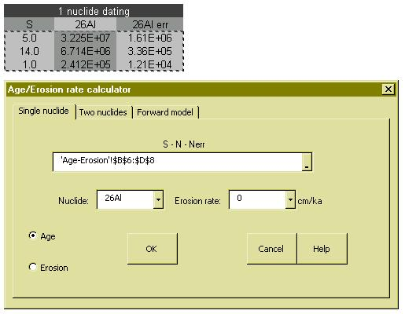
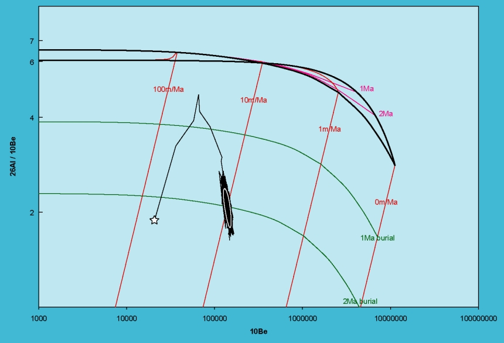
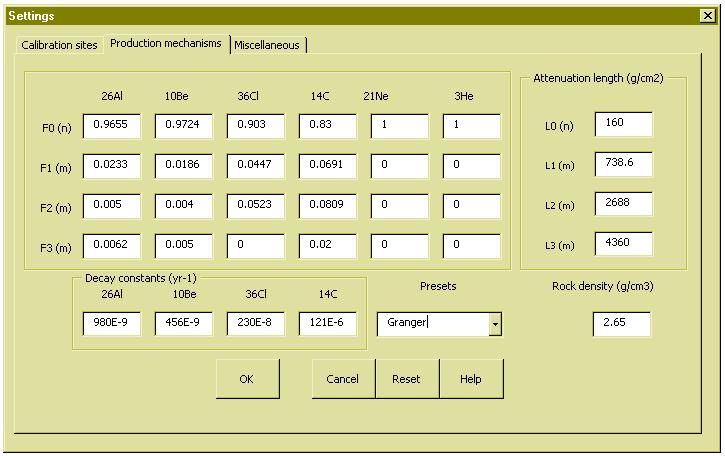

CosmoCalc.xla is an Excel add-in designed with the intention to implement the
increasingly sophisticated tools of terrestrial cosmogenic nuclide geochronology
in a user-friendly way, while enforcing the good practice of using a
consistent set of production rate scaling factors for both the calibration
sites and the unknown samples. The add-in as well as the CosmoTest.xls
spreadsheet with test data can be downloaded from the CosmoCalc website
http://cosmocalc.london-geochron.com. Full details about the calculations are
provided in the G-Cubed article [1].
After installing the add-in (see downloadable instructions), a toolbar menu appears that
guides the user through the data reduction and closely follows the outline of this
manual. The following pages will show how to scale production rates for latitude
and elevation, how to calculate topographic, snow and self-shielding factors,
generate banana-plots, calculate exposure ages, burial ages and erosion rates,
and calculate geomagnetic cutoff rigidities, atmospheric depths and so forth.
Cosmogenic nuclide production rates are a sensitive function of latitude and elevation, and
a lively debate is going on in the community as to how to best calculate these scaling
factors. CosmoCalc presently implements four scaling models: Lal [2], Stone [3], Dunai [4]
and Desilets [5][6]. Although the more recent models such as those by Dunai and Desilets
are significantly more sophisticated than the early scaling model by Lal, they are just as
easy to use in CosmoCalc: just select two columns with a measure of the sample’s latitude
and elevation, select the nuclide and scaling model of interest and click “OK”.
It is equally simple to compute topographic, snow and self-shielding factors. The nuclide
concentrations and the product of the scaling and shielding factors are the only input
required for all further calculations.
CosmoCalc uses the ingrowth equation of Granger and Smith [7], which is a summation of four exponentials: one for neutrons, two for slow muons and one for fast muons.
with:
| N = nuclide concentration | t = age |
| ϵ = erosion rate | τ = burial age |
| P = SLHL production rate | ρ = rock density |
| λ = decay constant | Λi = attenuation length |
| Si = scaling factor | Fi = relative production |
| i = 0: neutrons | i = 1, 2: slow muons |
| i = 3: fast muons | |
Default values for the various parameters in this equation are those advocated by [7],
but alternative values can also be set. In a simple exposure history, the cosmogenic nuclide
concentration is a function of the exposure age, the erosion rate and the burial age. Those
are three parameters, so if only one nuclide was measured, we need two assumptions,
whereas if two nuclides were analysed, of which at least one radionuclide, only one
assumption is needed.
Measuring two nuclides also allows the generation of banana-plots. These are sophisticated
devices which depend on a large number of parameters, such as the production rates at sea
level and high latitude, the scaling model, and the relative proportions of the various
production mechanisms. Prior to CosmoCalc, banana plots were often generated in
graphics applications such as Grapher©. The advantage of CosmoCalc is once again its
flexibility. Different kinds of Al-Be and Ne-Be plots can be generated on the fly.
These two Ne-Be plots, for example, show how the contribution of muons causes a
characteristic cross-over between the steady-state and zero erosion lines, which is absent
when muons are neglected.

Given a scaling factor and the concentration of a single nuclide, and assuming zero burial,
CosmoCalc can either calculate a steady state erosion rate, or a finite exposure age under
the assumption of a particular erosion rate.
Only one assumption is needed if two nuclides were measured. For example, by assuming an erosional steady state and setting an infinite exposure age, CosmoCalc simultaneously computes the erosion rate and burial age:
Alternatively, if a sample plots inside the erosion island of the banana plot, we can safely assume zero burial, and simultaneously compute the exposure age and erosion rate:
All these calculations are equally simple in CosmoCalc. Simply select the desired
calculation and the two nuclides from pull-down menus, select two times three columns of
the spreadsheet with the correction factors, the nuclide concentrations and their 1-σ
uncertainties, and click “OK”.
CosmoCalc implements two numerical techniques to solve the non-linear systems of
equations. The default is Newton’s method, which is a very fast and exact algorithm. The
Metropolis algorithm is offered as an alternative.

The Metropolis algorithm is a Monte Carlo method that is computationally considerably
more intensive than Newton’s method. Over a thousand iterations, it first converges from
an initial guess to the correct solution and then continues to sample the entire solution
space. The Metropolis algorithm has two advantages of Newton’s method. First,
it will always find a solution, even if the sample plots just into the so-called
“forbidden zone” of the banana plot. Newton’s method would diverge in this case.
Second, the Metropolis algorithm will yield asymmetric and therefore more
meaningful confidence intervals than the symmetric confidence bounds given by
Newton’s method, which are calculated by standard error propagation.
Newton:
Metropolis:
CosmoCalc also provides a useful forward modeling function. This function was used to
generate the synthetic data of the CosmoTest worksheet.
Different scaling models use different kinds of geographic input. For example, Lal’s scaling
model uses elevation whereas Stone uses atmospheric pressure and Dunai and Desilets
atmospheric depth. Furthermore, Lal and Stone use geomagnetic latitude whereas Dunai
uses geomagnetic inclination and Desilets cutoff rigidity. To facilitate the comparison of
the various scaling models, CosmoCalc provides some easy-to-use conversion tools.
Scaling factors are the subject of much debate, and are definitely an important issue, but
they all have one thing in common, namely the crucial importance of using the same
scaling model for the unknown sample and the calibration sites. For this reason,
CosmoCalc defines the production rates not explicitly but implicitly, by specifying the raw
measurements of the calibration sites. The program comes with a set of default
calibration sites, but this list can be modified by removing and adding new sites.

It was shown earlier that the ingrowth equation is made up of 4 exponentials, all
parameters of which can be customized in this menu, where the relative contribution of
neutrons and muons as well as their respective attenuation lengths can be set. The
default values are those recommended by Granger and Smith [7], but alternative
options are also given, or custom values can be set by the user. For example, the
ingrowth equation of Schaller et al. [8], which contains not 4 but 8 exponentials, is
implemented in CosmoCalc by a least squares approximation of four exponentials.

Finally, some leftover parameters important for the scaling and shielding factors can be set
on the last tab of the shielding menu.
References
[1] Vermeesch, P., 2007, CosmoCalc: an Excel add-in for cosmogenic nuclide calculations: Geochemistry, Geophysics, and Geosystems (in press)
[2] Lal, D., Cosmic ray labeling of erosion surfaces: in situ nuclide production rates and erosion models, Earth and Planetary Science Letters, 104, 424-439, 1991.
[3] Stone, J., Air pressure and cosmogenic isotope production, Journal of Geophysical Research, 105, 23753-23759, 2000.
[4] Dunai, T.J., Scaling factors for production rates of in situ produced cosmogenic nuclides: a critical reevaluation, Earth and Planetary Science Letters, 176, 157-169, 2000.
[5] Desilets, D., and M. Zreda, Spatial and temporal distribution of secondary cosmic-ray nucleon intensities and applications to in situ cosmogenic dating, Earth and Planetary Science Letters, 206, 21-42, 2003.
[6] Desilets, D., M. Zreda, and T. Prabu, Extended scaling factors for in situ cosmogenic nuclides: New measurements at low latitude, Earth and Planetary Science Letters, 246, 265-276, 2006.
[7] Granger, D.E., and A.L. Smith, Dating buried sediments using radioactive decay and muogenic production of 26Al and 10Be, Nuclear Instruments and Methods in Physics Research B, 172, 822-826, 2000.
[8] Schaller, M., F. von Blanckenburg, A. Veldkamp, L.A. Tebbens, N. Hovius, and P.W. Kubik, A 30000yr record of erosion rates from cosmogenic 10Be in Middle Europe river terraces, Earth and Planetary Science Letters, 204, 307-320, 2002.